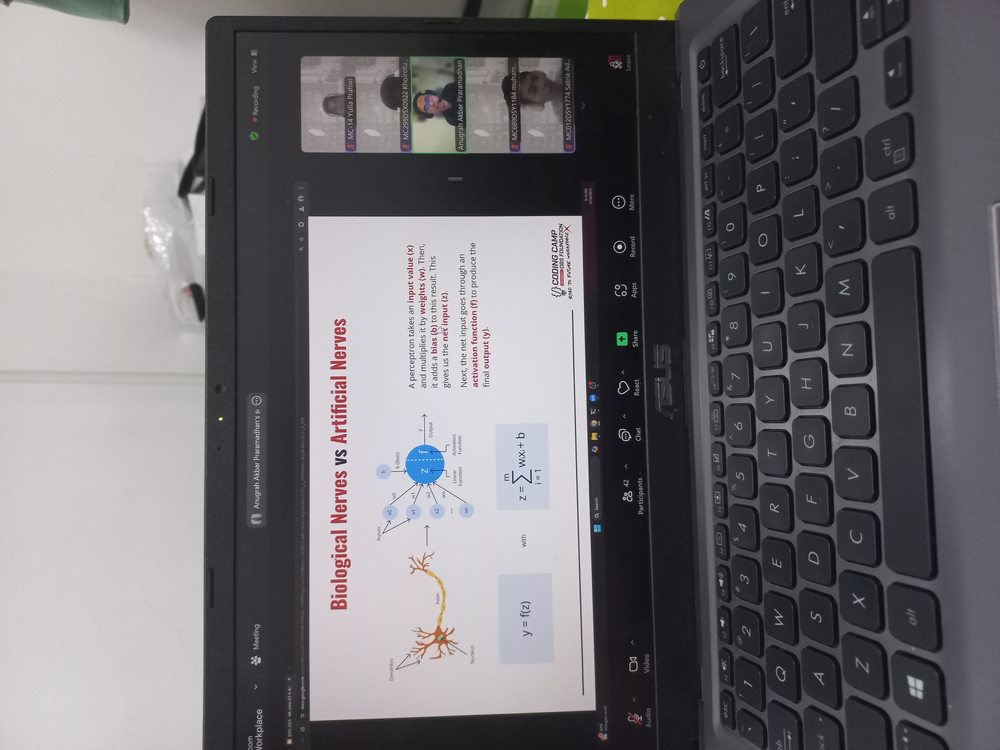
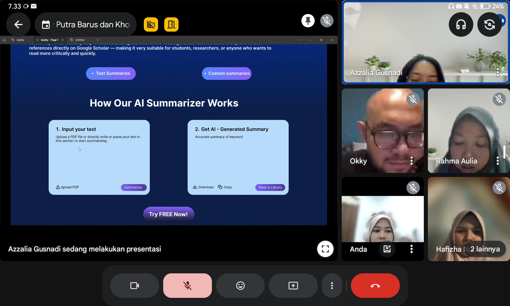

Machine Learning Cohort – Coding Camp powered by DBS Foundation
Pada periode Februari hingga Juni 2025, saya mengikuti program Coding Camp powered by DBS Foundation dengan learning path Machine Learning, sebuah program intensif yang dirancang untuk membekali peserta dengan keterampilan teknis dan praktik terbaik dalam pengembangan solusi berbasis machine learning.
Dalam program ini, saya mempelajari berbagai aspek fundamental dan lanjutan dalam machine learning, mulai dari pemrograman Python, data preprocessing, supervised dan unsupervised learning, evaluasi model, hingga proses deployment. Setiap modul disusun secara sistematis dan memberikan kesempatan untuk mengerjakan latihan serta project mini yang memperkuat pemahaman konsep.
Program ini diakhiri dengan capstone project berbasis tim, di mana saya dipercaya menjadi team leader. Dalam peran ini, saya bertanggung jawab mengoordinasikan pembagian tugas, memastikan workflow yang terstruktur, serta menjaga kualitas model yang dikembangkan oleh tim. Saya juga memimpin proses integrasi solusi akhir agar seluruh komponen project dapat berjalan secara optimal dan konsisten.
Pengalaman ini memperkuat kemampuan saya dalam machine learning pipeline, kolaborasi tim, problem-solving, dan technical leadership. Selain meningkatkan pemahaman konsep, program ini juga melatih saya untuk berpikir analitis dan merancang solusi data-driven yang dapat diterapkan dalam skenario nyata.